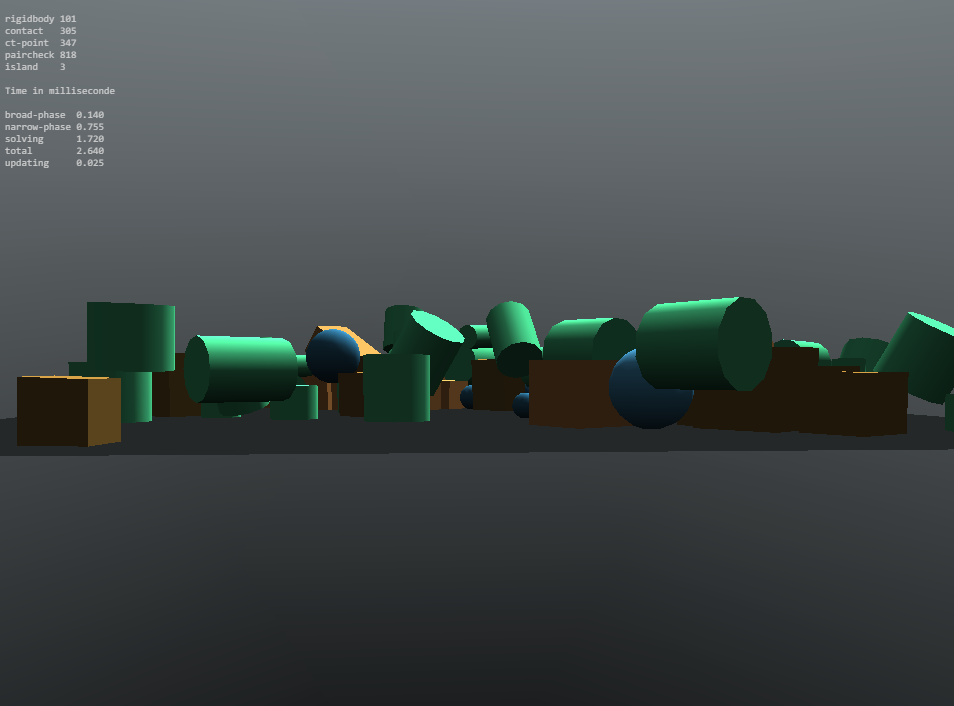
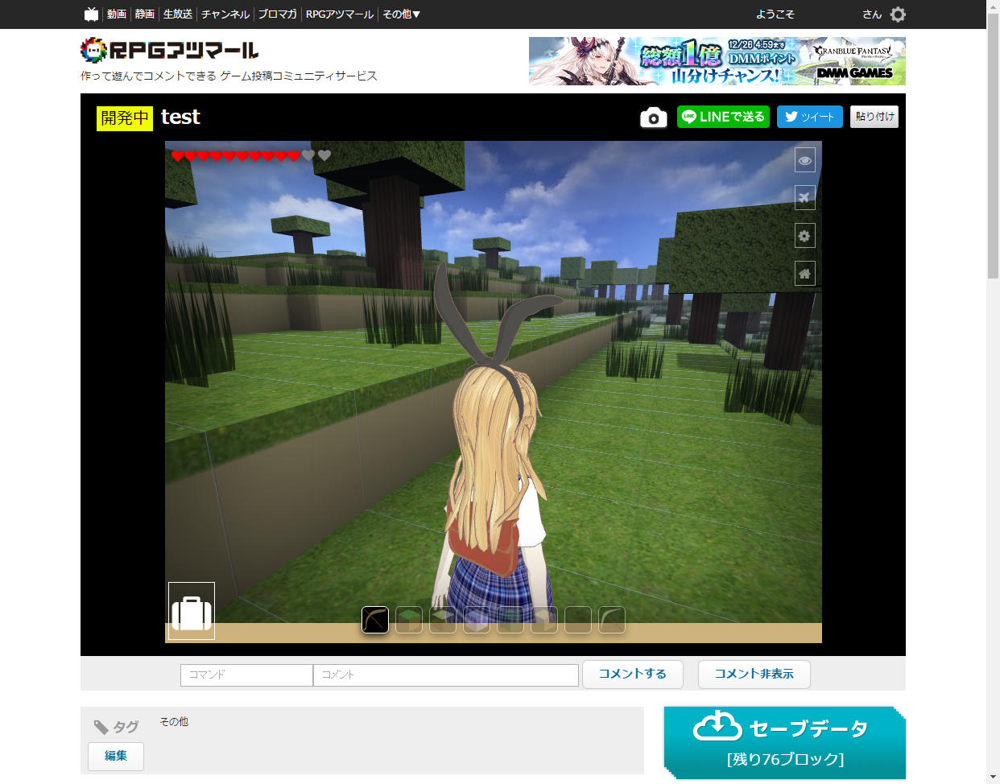

モナドのまほう 第12話『RPGアツマールに私も集まーる』
ゲームを作る日記です。星屑のインテンツィオーネに負けないゲームを作りたいと思います。
Oimo vs Cannon
衝突判定を自分で作ることも考えたんですが、まともにキャラクターを動かすにはかなりの量のコードが必要で、ほかのライブラリを使わずにやろうとすると自分で物理演算ライブラリを作っているようなものになってしまいそうです。物理エンジンをどうするか迷っていたんですが、JavaScript環境だとcannon.jsやoimo.js、ammo.js、bullet.jsなんかが知られています。ammo.jsやbullet.jsはC++/Bulletの移植なのでJavaScript環境だとAPIの設計や効率で問題が多く、cannonかoimoになると思います。それで、oimoのほうなんですが、

- http://lo-th.github.io/Oimo.js/docs/index.html
明らかに円筒が浮いてる……。オブジェクトのあいだに大きな隙間ができたり、いつまでも安定せずにピクピク動いているオブジェクトがあります。パフォーマンスではcannonよりoimoのほうが優れているという話なのですが、oimoはどうも精度に問題が多いようです。Cannon.jsではそんな風に明らかに浮いている物体とかはないです。
- http://schteppe.github.io/cannon.js/examples/worker.html
ドキュメントが揃っているのもcannon.jsのほうですし、今回はcannonにします。ボクセルで定義された地形をなるべく少ないAABBの組み合わせで表現するアルゴリズム、ありませんでしょうか。
ニコニコのRPGアツマール対応
いつものように『ステラのまほう』をニコニコ動画で視聴しようとしたところ、ページ上部に謎のリンクが追加されていることに気付きました。

http://game.nicovideo.jp/atsumaru/
なんだこれは……たまげたなあ。ニコニコはゲーム投稿サービスまで始めたんですか。そういえばRPGツクールを売ってるエンターブレインはカドカワに吸収されたんでしたっけ。黒先輩めっちゃ推してますね。実況動画で見たことがあります。HTML5が実用的になってきてからゲーム投稿サイトが結構増えてきたらしく、日本語圏だけでもちょっと検索しただけでこれだけありました。
静的なウェブコンテンツをホストするだけですから、サービスとしては難しくないのかもしれません。9leapは名前だけ知っていて、あとのサービスは今回初めて知りました。探せばまだまだありそうです。ゲームが形になってきたら、こういうゲーム投稿サイトで公開するのもいいかもしれませんね。ひとまずRPGアツマールに投稿できるか実験してみます。とりあえずまるごとzipにして送りつければいいらしいので、やってみました。
許可されてないファイル形式です: .babylon
許可されてないファイル形式です: .log
許可されてないファイル形式です: .manifest
許可されてないファイル形式です: .fx
許可されてないファイル形式です: .less
許可されてないファイル形式です: .scss
許可されてないファイル形式です: .ico
Oh... .lessとかはFontAwesomeについてきたオマケとかが紛れ込んでるだけだから削除すればいいですが、.babylonと.fxだけはちょっと困りました。特に.fxは、babylon.jsがソーステキストから直接シェーダマテリアルを読み込めず、.fxの拡張子を持つファイルを読み込むようにハードコーディングされているので面倒です。babylonjsは何かと小回りが利きません。しかたないので、.babylonは.jsonに、.fxは.txtに拡張子を変えて、それからbabylonjs本体も中身に置換をかけて無理やり対応させました。あと、日本語を含むファイル名についても警告が出たので、念の為にファイル名をアルファベットにしておきました。
もうひとつ困ったのが解像度です。現状は1280px * 720pxで作っているのですが、
※推奨解像度は816x624, 624x816, 768x432の3つです
とのことで、これ以上の解像度にしようとするとはみ出してしまいます。しかたないので、ニコニコ専用のスタイルシートを用意して追加で読み込ませて調整しました。タイトル画面とかに被せてる画像が1280*720用なので一部のアスペクト比がアレですが、ちゃんと動きました。

こちらで実際に閲覧できます。ネットワークの状態によってはうまく地形が描画されないバグがあるので、もし地形が表示されないようなら再読み込みしてみてください。現在は投稿一覧に反映されない開発中ステータスです。まだ今後も本当にアツマールで公開するのかは決めていませんが、もしアツマールに投稿したならご贔屓にどうぞ。ニコニコはなんにせよユーザが多いので、たくさんのひとに遊んでもらいたいならいいかもしれません。つーか9leapの解像度320×320はさすがに狭すぎやしませんか……。jsdo.itも狭いですが……。plicyは大画面にも対応していて、「R-15」とか「ksg」(ｸｿｹﾞｰ?)のカテゴリまであって懐が深そうですが、運営会社が何故か建築会社です。謎。
多少手間はかかりましたが、なんとでもなりそうです。残る問題として、PointerLock APIだけ下記のエラーが出て動きません。
Blocked pointer lock on an element because the element's frame is sandboxed and the 'allow-pointer-lock' permission is not set.
( ´_ゝ｀)ﾌｰﾝ RPGアツマールに投稿されているゲームはほとんどRPGツクールMV製ですし、さすがにPointerLockまでは許可されていなかったです。
アツマールはコメント流れるのがいかにもニコニコっぽく、不思議なことにちゃんとゲームの進行と連動してコメントが流れているようです。圧縮されていて読みづらいのですが、html5.nicogame.jp/js/bundle.jsというファイルにupdateGamePositionKeyという関数があって、そこでそのシーンのセリフのsha256ハッシュ値をとり、それをゲームの場面ごとのキーとして、コメントと結びつけているみたいです。this._tkoolGlobalっていうのがWindowで、$のプリフィックスをつけてグローバルにいろんなオブジェクトがばらまかれてますね。RPGツクールMV……。
$dataActors:Array[6]
$dataAnimations:Array[121]
$dataArmors:Array[6]
$dataClasses:Array[7]
$dataCommonEvents:Array[5]
$dataEnemies:Array[15]
$dataItems:Array[6]
$dataMap:Object
$dataMapInfos:Array[19]
$dataSkills:Array[12]
$dataStates:Array[11]
$dataSystem:Object
$dataTilesets:Array[7]
$dataTroops:Array[23]
$dataWeapons:Array[6]
$gameActors:Game_Actors
$gameMap:Game_Map
$gameMessage:Game_Message
$gameParty:Game_Party
$gamePlayer:Game_Player
$gameScreen:Game_Screen
$gameSelfSwitches:Game_SelfSwitches
$gameSwitches:Game_Switches
$gameSystem:Game_System
$gameTemp:Game_Temp
$gameTimer:Game_Timer
$gameTroop:Game_Troop
$gameVariables:Game_Variables
$plugins:Array[1]
$testEvent:null
誰かに話しかけたりしてイベントが始まると画面下部にメッセージウィンドウが表示されますが、this._tkoolGlobal.$gameMessage._textsがそのテキストになっていて、シーンを移動するごとにこれを蓄積しているようです。それで、シーンが切り替わるごとにダイジェストを計算してgamePositionKeyという場面を表すユニークなキーにしているみたいです。これをコメントと結びつけて、シーンごとに表示するコメントを選んでいるわけですね。大まかな仕組みはわかったので、頑張ればツクール製でないゲームでもコメントに対応させることは不可能ではなさそうです。なかなか大変そうですが。あんまり調べると怒られそうですね。それよりAPIを公開してくれると嬉しいです。
アツマールの利用規約には以下の文言があって、それを気にする人もいるみたいです。
なお、投稿者は、運営会社及び運営会社が指定する第三者に対して著作者人格権その他いかなる権利の主張及び行使も行わないものとします。
要するにゲーム実況とか二次創作とかのネタに使われても文句言うなってことですね。ニコニコのクリ奨に使われても文句は言えないという規約になっています。コメントを被せること自体がそもそもある種の改変ですし、サービスの性質上やむを得ないとは思います。ニコニコ動画は無法地帯だし、しかたないね。私も以前ニコニコでゲーム実況やってましたし、その辺は気にならないですけど。
筆者は『ステラのまほう』を応援しています。
追記
- 「ゲーム」とは、利用者がRPGツクールを利用して制作されたRPGツクールの二次的著作物であるゲームソフトのことをいいます。
http://game.nicovideo.jp/atsumaru/term
ちょっ……「ゲーム」とはRPGツクールを利用して制作されたものだけを指すらしいです。そんなわけで、利用規約ではそれ以外のものについての規定がなく、OKともダメとも書かれてません。もし怒られたらまた考えます。